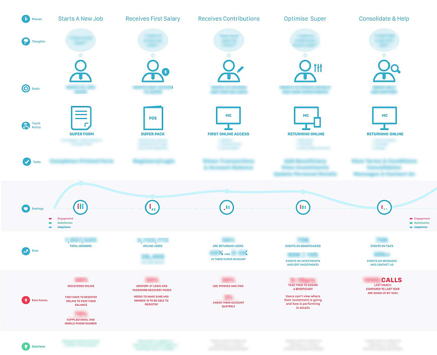
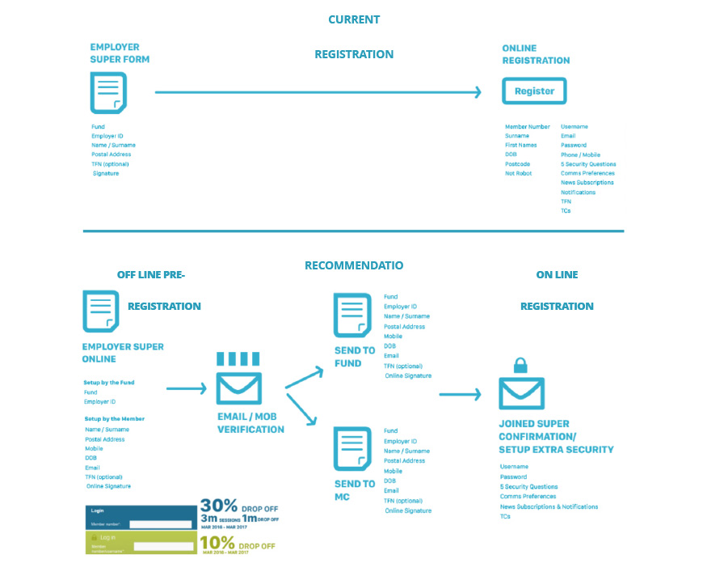
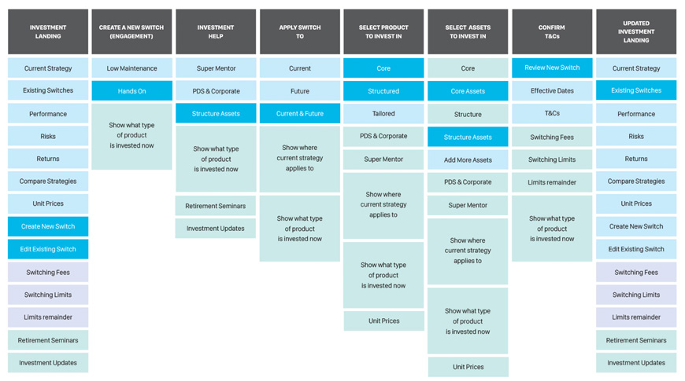
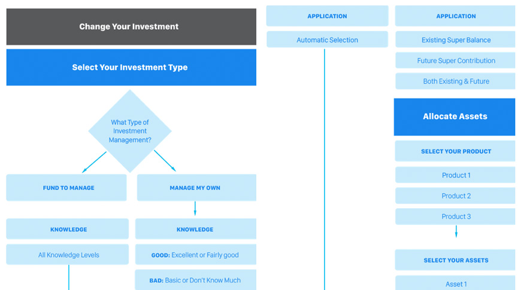
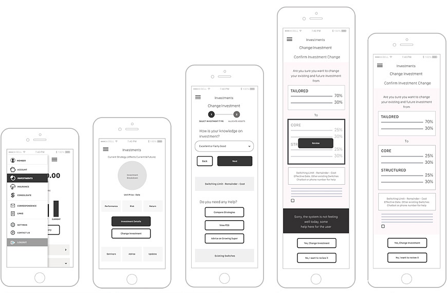
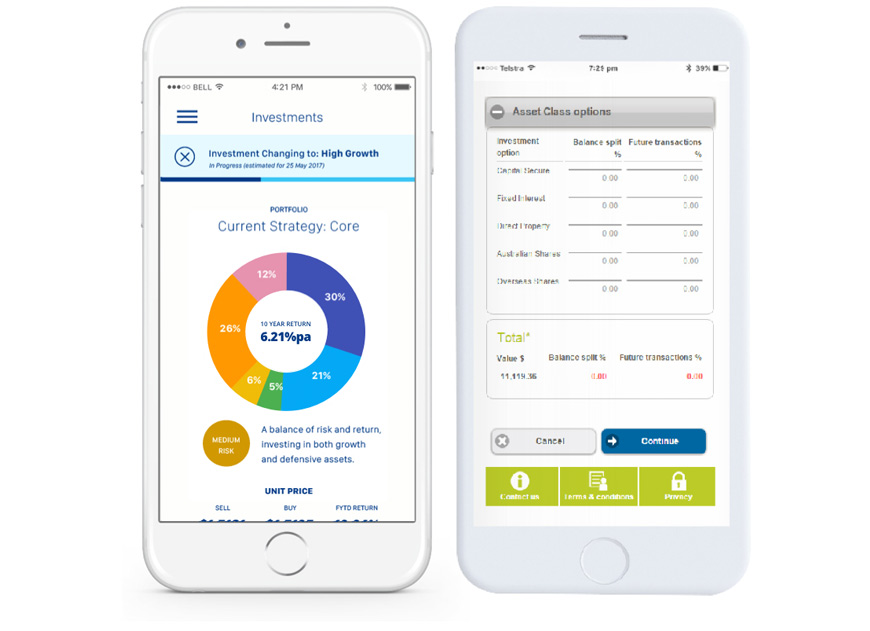
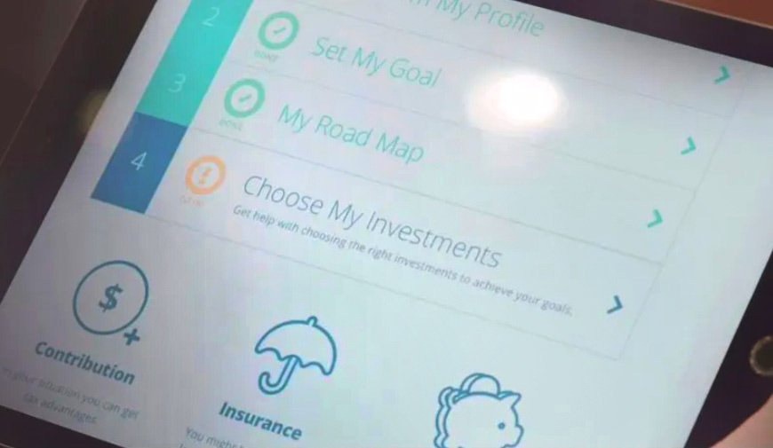
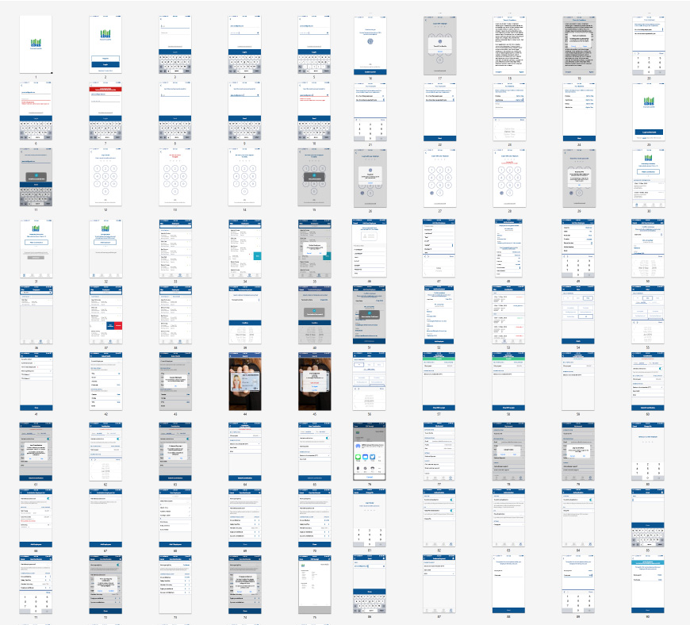

Simplifying experiences for people
Hello, I am Claudia Ruiz, a designer & researcher with more than ten years of experience working in the media and finance industry. With a background in art and development, I enjoy applying design thinking, lean UX and different engagement techniques to work in a team on a continuous iterations that builds, measures, and learns towards better experiences for users.
Optimizing Research for the Construction Industry
Researching for The Largest Construction Database | Gov, Real Estate & Mining

The Project & My Role
I engaged with the team as a solo researcher & designer to explore ways to optimize the experience and set the foundations for research.
The Process & Outcome
Through desigh thinking we sought to understand causes, framed problems, and explored solutions. Managed to serve data 4 times faster.
The Process
-
01
Understanding goals: product, user & data
Stakeholder Interview | Analytics & Secondary | Usability Benchmarking
Partnered with the team to review the case from their perspective. We highlighted the symptoms that we later used to design a contextual observation. I observed the usage, problem, and general behavior with the system. Later set a benchmark for every stage of the user flow so we could measure the impact of the upcoming changes.
-
02
Observing usage & workarounds
Contextual Enquiry | Task Analysis | Affinity Mapping | Persona
Conducted some explorative observation followed by contextual inquiries. Aimed at learning about their process, context, goals with a special focus on usability and workarounds. We used affinity mapping for pattern identification and sense-making and persona for empathy building.
-
03
Problem framing & prioritization
Journey Mapping | Workshop: Shared Understanding & Prioritization
Divided into small teams to built a journey mapping, we visualize all the touchpoints with the legacy system, highlighted user pain points, and workaround. Data specialists unpacked to the team the knowledge and challenges to be solved. We captured notes with a mindset of solving problems (HMW) and prioritized business impact and development efforts.
Internal Comms
To avoid double-ups, users needed constant communication with their colleagues so they could synchronize their work. We introduced the messaging section.
Tracking Projects
To keep track of their workflow, users would surround themselves with paper notes. To help them, the recall section brings a calendar pattern and a to-do list.
Easy Data Capture
Customers wanted more details on upcoming projects. We re-architectured the data adding granularity. In addition, we improved the usability of the forms with new patterns & dynamic fields.
Transforming The Valuation Process
Designing a Smart Tool for Property Valuation | Valuers, Brokers & Lenders

The Challenge & My Role
Changes were occurring across the property sector, and CoreLogic needed to secure an industry leader position targeting banks & governments.
The Process & Outcome
Increased conversion rate by 15% & generated investment partnerships 2019-2020 (Australia & New Zealand).
Article: Rural Launched Article: Remote Vals COVID More Details: The Process & My Role
The Story & Process
The traditional process of estimating the value of a property was slow. Over the years, the financial service channels had been designed in isolation, making the whole experience fragmented and confusing. Driven by a wish to adopt a user needs approach and explore the opportunities within the service, I embarked with the team at CoreLogic & Pivotal Labs on a project to look at the process holistically. We fundamentally changed the way professionals involved in the phases of the property valuation go about their jobs.
-
01
Learning about the user's job
Explorative Research | Field Observations | Affinity Mapping | Persona
I spent time with valuers in their field to learn about their work, followed by data synthesis by visualization for easy sharing. I paired with subject matter experts to analyze and brainstorm solutions. Valuers were trained differently and had a diverse way to approach a job.
-
02
Mapping data & identifying opportunities
User Journey | Task Analysis | Stakeholder Mapping | Service Blueprints
We workshopped for sense-making and common understanding. We assessed the findings and internal knowledge. We prioritized based on impact and implementation efforts.
-
03
Prototype, test & iteration
Brainstorming Workshops | Team co-Creation | Prototype & Feedback/p>
During the project's life cycle we learned from different stakeholders, the client, and the user. Constantly iterating, improving, and launching until 2021.

Reducing Calls
Information about the status of a valuation was essential, but the system was confusing and generated customer calls. We mapped the customer's mental model through a card sorting exercise that improved the system's feedback. Implemented a design language to reflect the valuation process and set the right expectations. No need for calls.
Data on the Field
We introduced a new user interface with smarts built into to support data capture on the field and addons like photo management, geomapping tools, and pre-set commentary that helped to reduce error while speeding up their work. I set up the foundation of the design system featuring a minimalist design to support the complexity of their work.
Desktop Assessments
The industry needed a lightweight alternative to expensive reports, so we launched the ability to do commercial, residential or rural assessment remotely, incorporating geospatial capabilities and costumed methodology calculators depending on the job type.
Big Data & Machine Learning
We leveraged the spatial open data and aerial imagery to built the platform in a way that valuers could complete a broad range of assessments remotely and accurately. Integrated with CoreLogic's algos and customer's data which allows supplementing the users' knowledge with CoreLogic's and government open data set.
Pivot - COVID
As COVID didn't allow valuers to enter the properties; we assisted by supporting remote valuations. Through a simple step-by-step process where they can upload images and documentation, time/date stamped with geo-coordinates, as a basis to support the assessment..
Super Investment Made Easy
Improving the investment experience | Superannuation and share registry

The Challenge & My Role
I joined the team to explore why users wouldn't engage with their investment and superannuation assets.
The Process & Outcome
We simplified the investment experience by redesigning the user journey, providing education, and automating risk profiles so users could understand their goals and risks.
Article: Employer App Awarded More Details: The Process & My Role
The Process
Link Group is an administrator of financial ownership data servicing funds, share trading and superannuation sectors (10 million super accounts and over 35 million shareholders) providing investor platforms, loan servicing systems and compliance products. I engaged with the team to explore opportunities** within the superannuation products and help the way people connect to their assets.
Journey from affinity mapping: Converted existing analytics & knowledge to a journey mapping to share insights across the business.
We reduced the drop off of the online registrations from 30% to only 10%.
Reviewed the information architecture so we could offer the right options at the right time.
 Translated learnings into wireframes and prototypes.
New design compared to the legacy product
Prototype: Simplification of investment as roboadvisor.
Collaborated: Employer app awarded App of the year at the MAX Awards in Sydney.
Property Market Insights
Designing an App for the Property Market | Real Estate Agents & Brokers

The Challenge & My Role
Users wanted to keep up to date with the property market, I helped the team as a solo visual designer and researcher.
The Process & Outcome
We workshopped around solutions. Designed the Insights section, currently the most used on the app.
Empowering News Media with Visualizations
Researching & Designed Interactive Visualizations. Moderated Communities | The New Zealand Herald

The Challenge & My Role
News media needed other mediums to help readers understand complex cases. I joined the team as a researcher and user experience designer.
The Process & Outcome
Researched, designed and developed visualizations for public accountability & storytelling. Created spaces to support social activism by coordinated exposure on crowdsourced tools.
Mapping The Shareholders Voting
Understanding a complex problem holistically| Fund Managers

The Challenge & My Role
The fund management team wanted to know why shareholders struggled to vote. I joined the ux team of two designers to explore the problem.
The Process & Outcome
Through a competitor's research, I mapped the goals of every stakeholder in the fund management life cycle and provided an informed holistic view.